hitching
Hitching is a sport. It's like a motorized version of snakes and ladders, except that instead of throwing dice, you throw a thumb and more often than not don't move.
You here stories of people who can dress like Mad Max, and take their choice of the cars that not only give them lifts, but which detour thirty, forty or fifty miles out of their way to land the magic people at their destination.
But if you are not a magic man, you are left with the problem of stopping cars. The only thing on your side when you stand by the side of the road is that some drivers pick up hitchers. Sooner or later one of them will stop. But don't count on it.
What you must do is figure out how to raise the odds in your favour. Fortunately, there are some basic techniques which may help you do this.
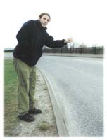
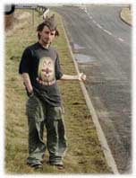
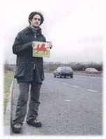
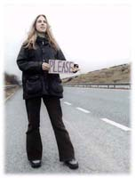
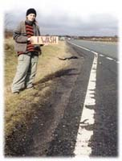
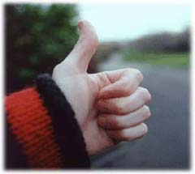
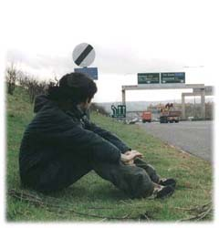
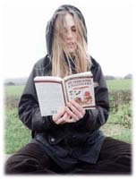
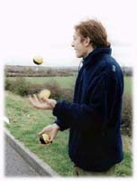
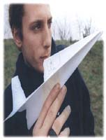
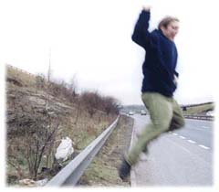
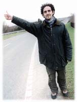
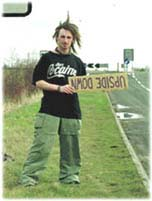
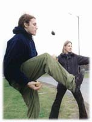
Some hitchers say that it doesn't matter what you look like, some drivers will pick up anybody. But many floating voters probably wouldn't pick up a smelly crusty, so little bit of effort can go a long way. Try to stay clean and dry, drivers don't usually want to ruin their upholstery. Wear the tidiest clothes at your disposal. If your hair is in a state, wear a hat. Wash your face in service stations.
Pick a safe, straight stretch of road with as much space for a car to stop as possible. If it's dark stand under a light. Your actual thumbing technique is entirely a matter of choice, if you get bored or your arm starts to ache, try a fanciful regal wave, or a courtsy. If your trying for a ride, try properly. Never take your eyes off the driver, and most importantly smile.
Boredom can be a big problem, especially if you're on your own. Half an hour is not too bad, but standing in the cold and rain for six hours can be detrimental to your views on car drivers. A good book is always a bonus. Pens and paper are good for letters home or origami. Other roadside passtimes include I-spy, golf with sticks and stones, breath-holding, and talking to yourself.
Some hitchers use destination signs only as a last resort. They do have their problems, drivers might not stop if they don't know where it is or if they think they are not going far enough to make it worth your while. But for all their faults they can be a really useful tool. You can also have fun with them. Try writing THE MILLENNIUM DOME, ?, ANYWHERE, or something in Russian.